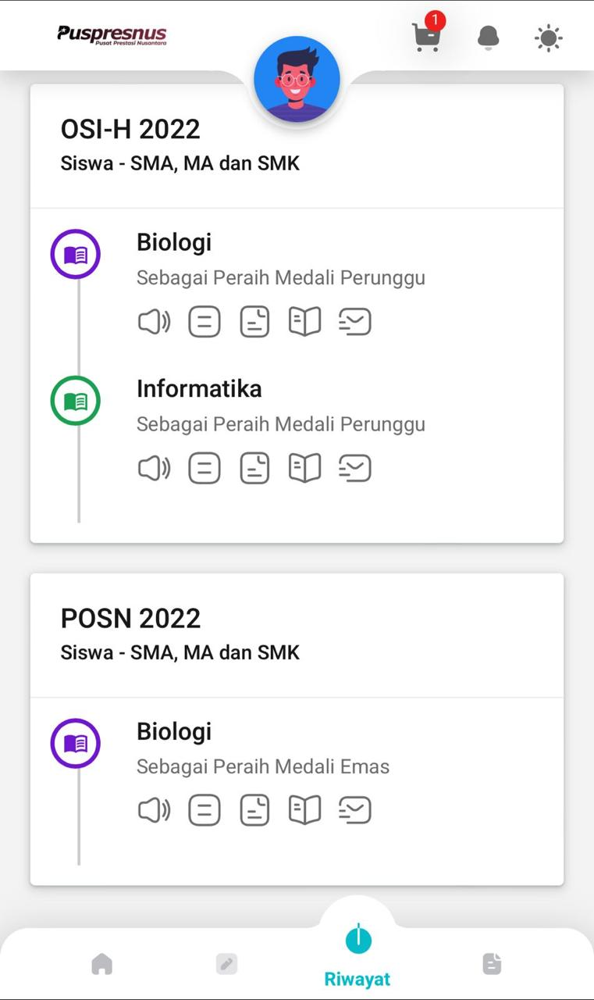
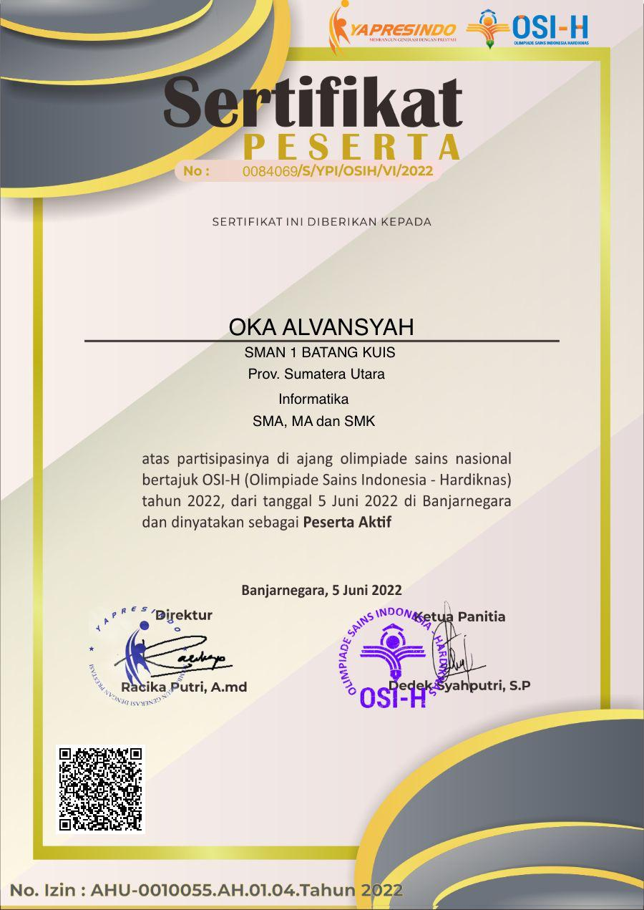
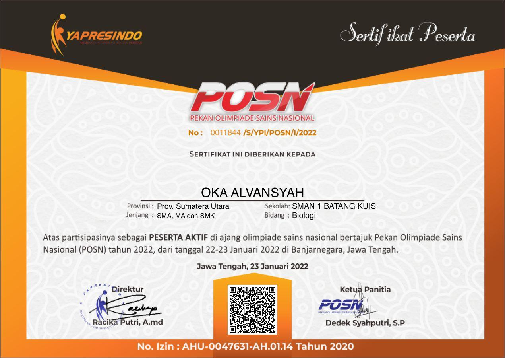

Prestasi saya

Meraih Medali
Olimpiade ini saya ikuti ketika saya SMA. Berawal dari keisengan mengajak teman untuk ikut, ternyata berhasil mendapatkan medali.
/a>

Olimpiade ke-3
Olimpiade informatika ini saya ikuti setelah olimpiade pertama saya pada bulan januari yaitu Bidang Biologi, walaupun hasilnya kurang memuaskan, saya tetap bersyukur
/a>Olimpiade ke-2
Olimpiade ini saya ikuti secara bersamaan dengan informatika sebelumnya, pada olimpiade ini saya memang sengaja mengambil 2 bidang yaitu Biologi dan Informatika.
/a>

Olimpiade Ke-1
Olimpiade Biologi ini merupakan hal yang paling berkesan karena saya mendapatkan medali emas, sampai saya dipanggil oleh kepala sekolah dan pada saat upacara diberi penghargaan.
/a>